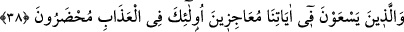
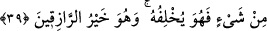
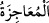

Dünya yolculuğunda bedenden başka konak yoktur.
Bu konak/menzilde yol azığı tedarik etmiyorsun, neden?
Allah Teâlâ’dan mutlak olarak bizim ümit ve arzularımızı kendi zâtının dışında olan
her şeyden kesmesini, kendisine ulaşma azmimizi sâdık ve O’na yönelişimizi hak
kılmasını niyâz ediyoruz.
38. Âyetlerimizi boşa çıkarmaya çalışanlara gelince, onlar da azapla yüz yüze
bırakılacaklardır.
Bizi âciz bırakacaklarını ve bizden kaçıp kurtulacaklarını, böylece yaptıklarına karşı
hesaba çekilmeyeceklerini zannederek Kur’ânî “Âyetlerimizi” reddederek ve onları
karalayarak “boşa çıkarmaya” onları iptal etmeye “çalışanlara” Kureyş kâfirlerine
“gelince, onlar da azapla yüz yüze bırakılacaklardır.” Yâni azâba giriftar olacak,
azaptan uzak olmayacak, güvendikleri şey de kendilerine fayda vermeyecektir.
Tâcü’l-mesâdır’da der ki: “ bir işte birinin önüne geçmektir. Bu kelimeyle
ilgili mâlûmat sûrenin başında beşinci âyette geçmişti.
et-Te’vîlâtü’n-Necmiyye’de der ki: “Onlar peygamberlere ve velilere hürmet ve saygı
göstermeyen, gizli hallerde Allah’ın hakkına riâyet etmeyenlerdir. Onlar peygamberlere
ve velilere itiraz azâbındadırlar. Yine bu itirazın uğursuzluğu sebebiyle Allah’ın
haramlarını irtikâba düşme azâbındadırlar. Sonra da Allah’ın gözünden düşmenin azâbı
içindedirler.
Mesnevî’de der ki:
Allah bir kimsenin perdesini yırtmak isterse,
Onu temiz kişileri kınayıp yermeye meylettirir.
39. De ki: Rabbim, kullarından dilediğine bol rızık verir ve (dilediğinden de)
kısar. Siz hayıra ne harcarsanız, Allah onun yerine başkasını verir. O, rızık
verenlerin en hayırlısıdır.
“De ki: “Rabbim, kullarından dilediğine” imtihan etmek için ve hikmetinden dolayı